El hotel rural Iparhotel llevaba las reservas de sus habitaciones en una hoja de cálculo y quería pasar a una aplicación. En este proyecto he hecho tres cosas, una por cada fase: primero el modelo de clases en Java, después una web de gestión con Spring Boot y por último una API REST protegida con JWT y una pequeña aplicación en Angular para que los clientes puedan reservar.
Cada fase se apoya en la anterior. Las clases de la fase 1 son las mismas que luego se guardan en la base de
datos en la fase 2, y el servicio de reservas de la fase 2 es el que usa la API de la fase 3. Todo está en un
mismo repositorio de GitHub con dos carpetas: iparhotel (el proyecto Java con Maven) y
iparhotel-web (el proyecto Angular).
Para empezar me basé en un proyecto que ya había hecho antes (IparGym, reservas de clases de un gimnasio), porque la estructura era muy parecida, y lo adapté al hotel: en vez de plazas en una clase, aquí se reserva una habitación entera para unas noches.
Antes de programar escribí las historias de usuario para tener claro qué tenía que poder hacer cada tipo de usuario. Hay tres tipos: el visitante anónimo, el cliente (que ha iniciado sesión) y el administrador del hotel. Cada historia tiene un criterio de aceptación en formato Given-When-Then (Dado-Cuando-Entonces).
/admin,/admin le sale "Acceso denegado".En el diagrama salen los tres actores. El cliente puede hacer todo lo que hace el anónimo y además reservar, por eso hay una flecha de herencia (generalización) del cliente al anónimo, y lo mismo del administrador al cliente. Al reservar siempre se calcula el importe, así que lo puse como «include».
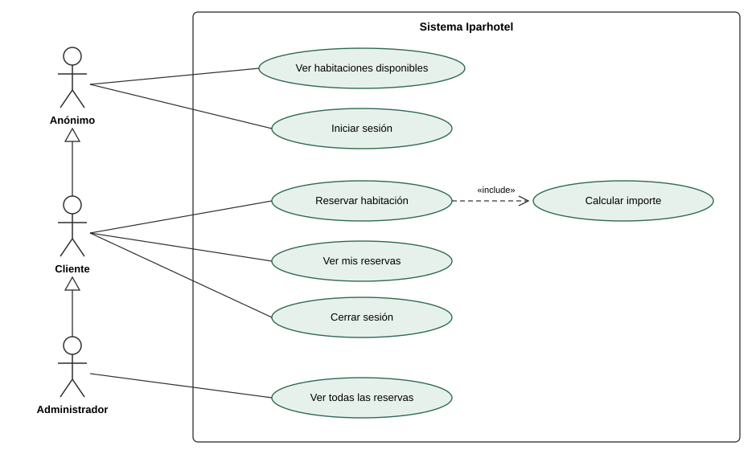
Habitacion es abstracta (está en cursiva) y tiene dos métodos abstractos que cada tipo de
habitación implementa a su manera. Suite además implementa la interfaz Promocionable
para el descuento. Una Reserva es de una habitación, y una habitación puede tener muchas reservas.
Los errores de negocio se lanzan con ReservaException, que hereda de RuntimeException.
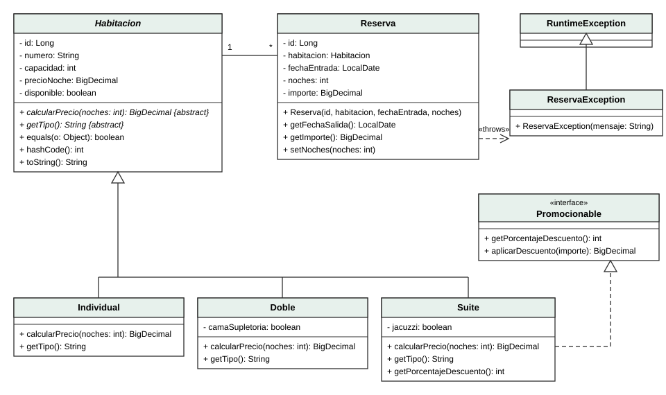
Crear las clases del hotel en Java puro: una jerarquía de habitaciones con una clase abstracta, una
interfaz para el descuento, la reserva y una excepción propia. Después probar el polimorfismo y los streams
con un main.
id, numero, capacidad,
precioNoche (BigDecimal, porque con double los céntimos salen mal) y disponible.
Tiene equals y hashCode por el id y un toString.default de la interfaz Promocionable.habitacion.calcularPrecio(noches), así nadie puede poner un precio inventado.RuntimeException y la lanzo, por ejemplo, si las noches son menos de 1.En PruebaPolimorfismo recorro una List<Habitacion> y llamo a
calcularPrecio(3) y calcularPrecio(6) sin usar instanceof ni
switch: cada objeto sabe calcular su precio. Con streams saco las disponibles ordenadas por precio
(filter + sorted) y sumo el importe de las reservas con map + reduce.
=== Precio de 3 y 6 noches === Individual 101 3 noches: 180.00 EUR 6 noches: 360.00 EUR Doble 201 3 noches: 270.00 EUR 6 noches: 540.00 EUR Doble 202 3 noches: 345.00 EUR 6 noches: 690.00 EUR Suite 301 3 noches: 500.00 EUR 6 noches: 855.00 EUR Individual 102 3 noches: 165.00 EUR 6 noches: 330.00 EUR === Habitaciones disponibles por precio/noche === Individual 101 60 EUR/noche Doble 201 90 EUR/noche Suite 301 150 EUR/noche === Reservas === Reserva [id=1, habitacion=101 (Individual), fechaEntrada=2026-11-18, noches=3, importe=180.00] Reserva [id=2, habitacion=202 (Doble), fechaEntrada=2026-11-21, noches=2, importe=230.00] Reserva [id=3, habitacion=301 (Suite), fechaEntrada=2026-12-01, noches=6, importe=855.00] Importe total de las reservas: 1265.00 EUR
Convertir el proyecto en una aplicación Spring Boot con base de datos, una web hecha con Thymeleaf para ver habitaciones y reservar, y seguridad con Spring Security.
@Inheritance(strategy = InheritanceType.SINGLE_TABLE): todas las habitaciones están en la tabla
habitaciones y una columna tipo_habitacion dice si es INDIVIDUAL, DOBLE o SUITE.@ManyToOne.CommandLineRunner: 6 habitaciones (2 de cada tipo), un administrador
y dos clientes, con las contraseñas ya codificadas.findByDisponibleTrueOrderByPrecioNocheAsc() y
findByUsuarioEmailOrderByFechaEntradaAsc(email).reservar comprueba que las noches estén entre 1 y 14, que la fecha sea futura y que la habitación
exista y esté disponible. Si algo falla lanza ReservaException. Si todo va bien calcula el importe
(polimorfismo otra vez) y marca la habitación como no disponible.layout.html) para la cabecera, el menú y el pie.UserDetailsService que busca el usuario en la base
de datos, /admin solo para el administrador y el menú cambia según el usuario con
sec:authorize.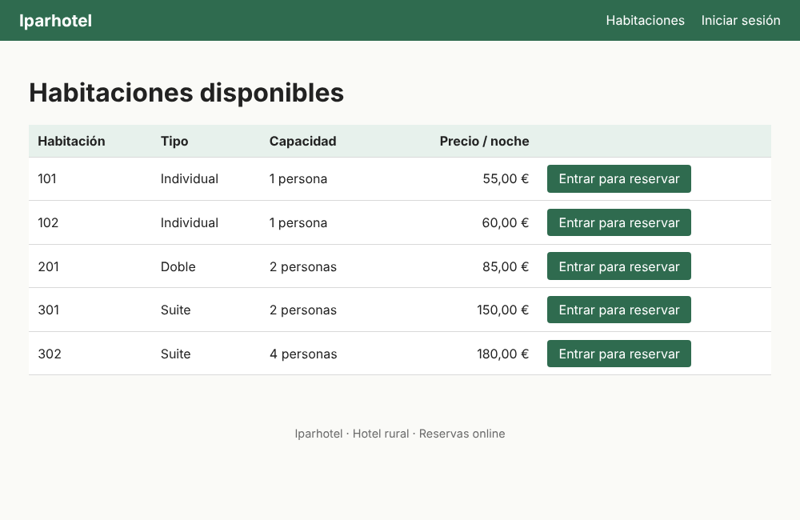
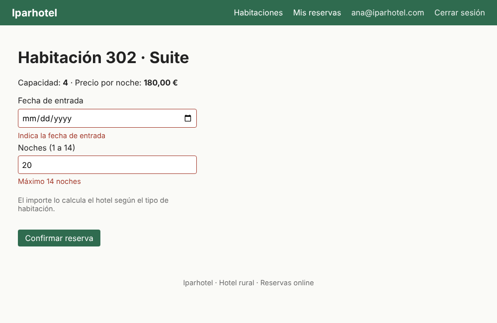
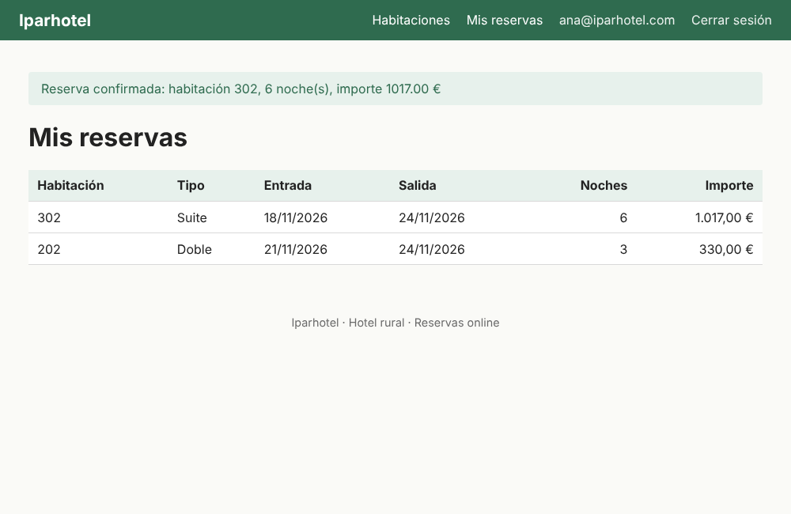
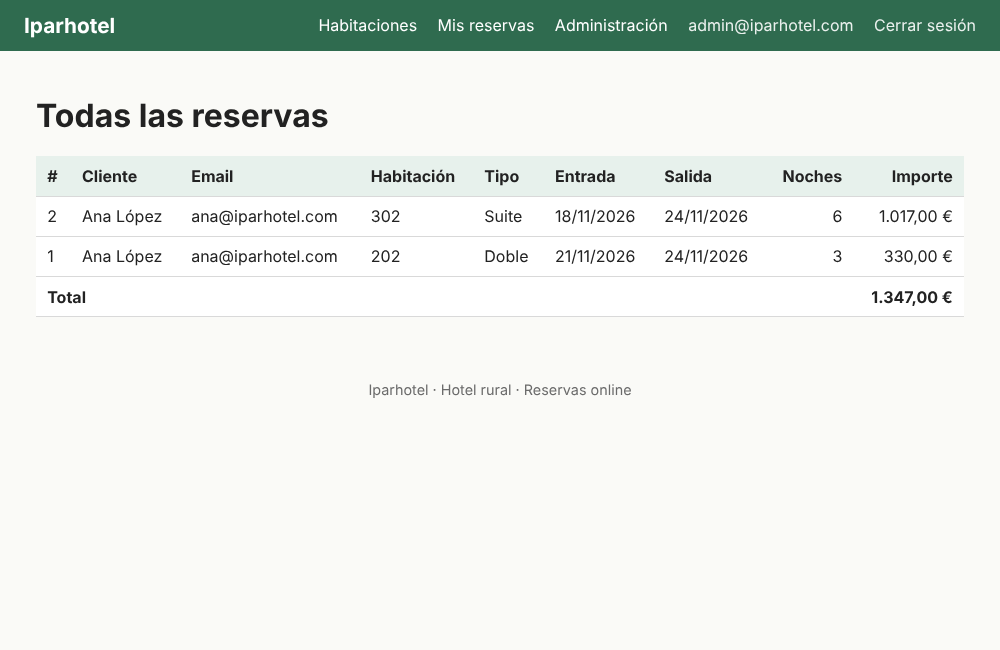
main (la de la fase 1 y la de Spring Boot), Maven no sabía cuál arrancar.
Lo arreglé poniendo start-class en el pom.xml.equals usaba otra.id y con los objetos "proxy" de Hibernate el campo sale null.
Lo cambié por otra.getId().LazyInitializationException. Lo
solucioné convirtiendo a DTO dentro del servicio y con @EntityGraph en el repositorio.Hice tres controladores con @RestController bajo /api/v2 que usan el mismo
ReservaService de la fase 2, así no tuve que repetir las reglas.
| Método y ruta | Acceso | Respuesta |
|---|---|---|
GET /api/v2/habitaciones | Público | Habitaciones disponibles |
POST /api/v2/usuarios/login | Público | {"accessToken": "...", "tokenType": "Bearer"} o 401 |
POST /api/v2/reservas | Con token | 201 Created, 400 datos no válidos, 404 no existe, 409 no disponible |
El token es un JWT firmado con HS256. El subject es el email y lleva los claims nombre y
rol. El secreto está en application.properties pero se lee de la variable de entorno
JWT_SECRETO, para no subirlo a GitHub. En la seguridad configuré oauth2ResourceServer con
JWT y CORS para http://localhost:4200. El usuario de la reserva se saca del token
(jwt.getSubject()) y no del JSON, así un cliente no puede reservar a nombre de otro.
Como la web de la fase 2 sigue funcionando con su login de formulario, hice dos cadenas de seguridad:
una para /api/** (sin sesión, con token) y otra para la web.
$ curl -s -X POST localhost:8080/api/v2/usuarios/login -H "Content-Type: application/json" -d '{"email":"javier@iparhotel.com","password":"javier123"}'
{"accessToken": "eyJhbGciOiJIUzI1NiJ9.eyJpc3MiOiJpcGFyaG9...", "tokenType": "Bearer"}
# payload del token (base64 decodificado)
{"iss":"iparhotel","sub":"javier@iparhotel.com","exp":1794395345,"iat":1794391745,"nombre":"Javier Etxeberria","rol":"CLIENTE"}
$ curl -i -X POST localhost:8080/api/v2/reservas -H "Authorization: Bearer $TOKEN" -d '{"idHabitacion":1,"fechaEntrada":"2026-11-12","noches":3}'
HTTP/1.1 201
{"id":3,"numeroHabitacion":"101","tipoHabitacion":"Individual","nombreUsuario":"Javier Etxeberria","emailUsuario":"javier@iparhotel.com","fechaEntrada":"2026-11-12","fechaSalida":"2026-11-15","noches":3,"importe":165.00}
# la misma habitacion otra vez
HTTP/1.1 409
{"type":"about:blank","title":"Conflict","status":409,"detail":"La habitación 101 no está disponible","instance":"/api/v2/reservas","motivo":"HABITACION_NO_DISPONIBLE"}
# noches = 20
HTTP/1.1 400
{"type":"about:blank","title":"Bad Request","status":400,"detail":"Los datos enviados no son válidos","instance":"/api/v2/reservas","errores":{"noches":"Máximo 14 noches"}}
# sin token
HTTP/1.1 401
{"type":"about:blank","title":"Unauthorized","status":401,"detail":"Necesitas un token válido para acceder a este recurso."}Creé el proyecto con Angular CLI (ng new iparhotel-web) y los componentes, servicios y el guard
con ng generate. Tiene tres rutas:
'' (principal): lista las habitaciones con @for. Cada fila es un componente hijo,
habitacion-fila, que recibe la habitación con input() y avisa al padre con
output() cuando se pulsa "Reservar".login: al entrar guarda el token en JwtService, que tiene dos signals calculados
(autenticado y nombre), y vuelve a la principal. La cabecera lee esos signals y
muestra "Hola, nombre" y el botón de cerrar sesión.reservar/:id: protegida con un guard que manda a /login si no hay sesión. Tiene un
formulario de fecha y noches que llama a la API con la cabecera Authorization: Bearer y muestra el
importe que calcula el servidor o el error que devuelve.Para cargar los datos al abrir una página usé el método del ciclo de vida ngOnInit().
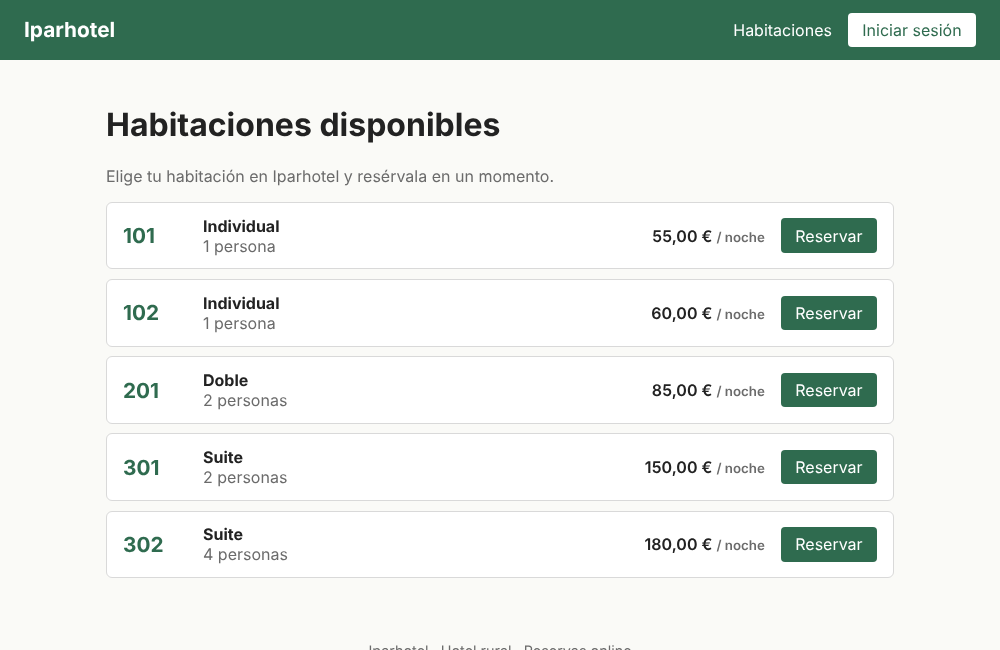
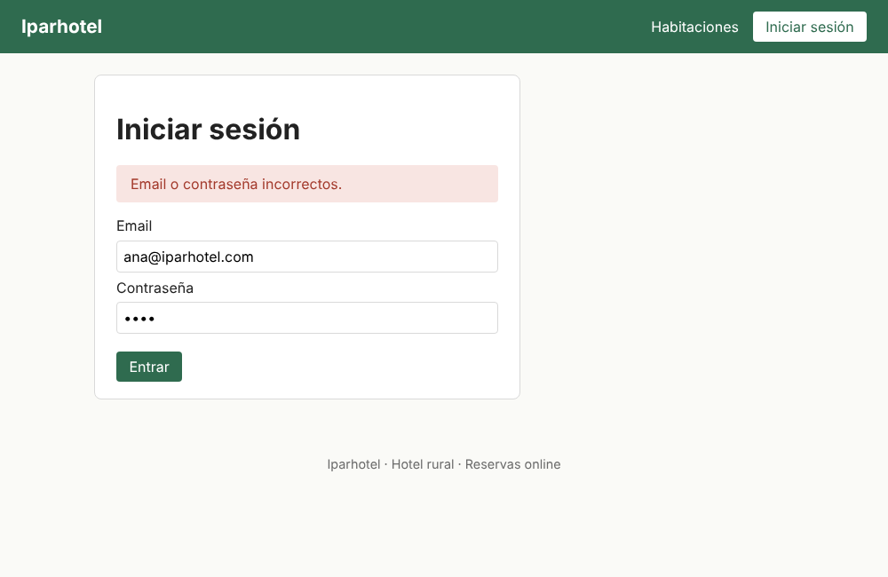
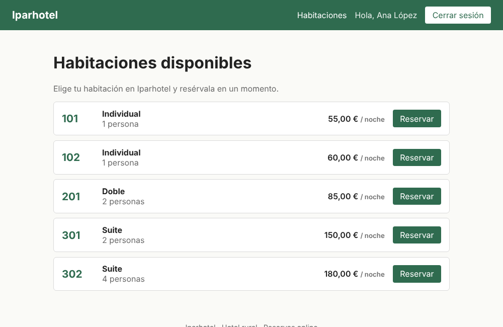
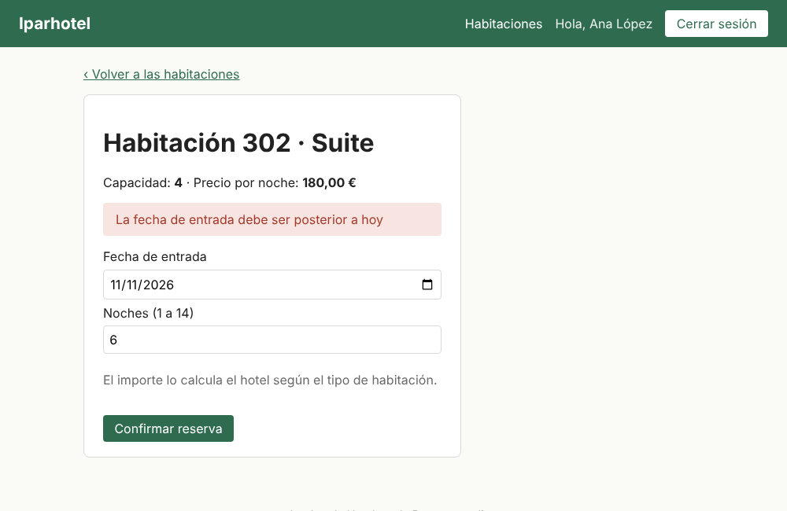
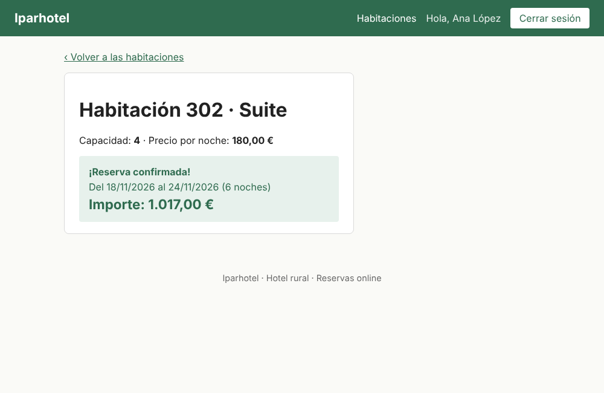
JWT_SECRETO la aplicación no arranca. Al principio pensé que era un error, pero
es a propósito: así no se puede arrancar con un secreto por defecto.@ControllerAdvice de la web también cogía los errores de la API y los redirigía a una
página HTML. Lo limité con basePackages para que cada uno tenga su manejador de errores.Fui haciendo pruebas en cada fase. En Java uso JUnit 5, Mockito y MockMvc; las pruebas usan una base de datos H2 en memoria para no necesitar MySQL. En Angular uso las pruebas que trae Angular CLI (Vitest).
| Clase de prueba | Qué comprueba | Pruebas |
|---|---|---|
| HabitacionTest | Precios de cada tipo, descuento de la suite, equals/hashCode | 11 |
| ReservaTest | Importe calculado por el sistema y ReservaException | 5 |
| ReservaServiceTest | Reglas de reservar() con Mockito (noches, fecha, no disponible...) | 6 |
| RepositoriosTest | Consultas derivadas y SINGLE_TABLE con @DataJpaTest | 2 |
| WebSeguridadTest | Login, /admin solo para administrador, formulario y mensaje flash | 8 |
| ApiTest | Token JWT con sus claims, 201, 400, 401, 404, 409 y CORS | 7 |
| Angular (3 ficheros) | JwtService, guard y componente principal | 7 |
En total son 39 pruebas en Java y 7 en Angular, y todas pasan (mvn test y ng test).
iparhotel se crea sola). Usuario y contraseña por defecto
root/root, se cambian con las variables DB_USER y DB_PASSWORD.JWT_SECRETO=un-secreto-largo-de-al-menos-32-caracteresiparhotel: mvn spring-boot:run. La web está en http://localhost:8080.iparhotel-web: npm install y ng serve. Angular está en http://localhost:4200.| Usuario | Contraseña | Rol |
|---|---|---|
| admin@iparhotel.com | admin123 | ADMINISTRADOR |
| ana@iparhotel.com | ana123 | CLIENTE |
| javier@iparhotel.com | javier123 | CLIENTE |
Lo que más me ha gustado es ver cómo el mismo modelo de la fase 1 se ha ido usando en todo el proyecto: el
método calcularPrecio que hice al principio es el que calcula el importe que sale en la web y en
Angular. También he entendido mejor la diferencia entre la seguridad con sesión (web con Thymeleaf) y con token
(API con JWT), porque al final he tenido que tener las dos a la vez.
Lo que más me costó fue la parte de seguridad y los errores de CORS. Si tuviera más tiempo añadiría poder cancelar reservas, comprobar que no se solapen las fechas (ahora la habitación se marca como no disponible directamente) y una página de "Mis reservas" en Angular.